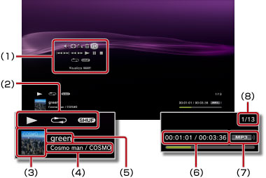

Musica > Utilizzo del pannello di controllo
Utilizzo del pannello di controllo
Il pannello di controllo a schermo consente di eseguire varie operazioni. Il pannello di controllo può essere visualizzato o nascosto premendo il tasto  .
.
Regolazione del volume

Regolare il livello di uscita del volume per il contenuto riprodotto sotto  (Musica). È possibile selezionare uno dei nove livelli.
(Musica). È possibile selezionare uno dei nove livelli.
Nota
L'audio può essere distorto se il livello di uscita del volume è troppo alto. In questo caso, abbassare il livello di uscita del volume.
Visualizzatore
Selezionare uno dei numerosi sfondi da visualizzare durante la riproduzione del contenuto.
Nota
Non è possibile modificare gli sfondi del Visualizzatore quando è visualizzato il contenuto sotto  (Foto) o
(Foto) o  (Browser per Internet).
(Browser per Internet).
Aggiungi a elenco di riproduzione
Aggiunge il contenuto in riproduzione ad un elenco di riproduzione.
Nota
È possibile aggiungere a un elenco di riproduzione solo i file musicali salvati sul disco rigido.
Elimina
Elimina il contenuto in fase di riproduzione.
Nota
È possibile eliminare solo i file musicali salvati sul disco rigido.
Visualizza
Visualizza lo stato e altre informazioni durante la riproduzione. Le informazioni variano in base al contenuto riprodotto.

(1) |
Pannello di controllo |
|---|---|
(2) |
Icona di stato |
(3) |
Icona del brano |
(4) |
Nome artista/nome album |
(5) |
Nome del brano |
(6) |
Tempo trascorso del brano/totale |
(7) |
Codec |
(8) |
Numero brano/numero totale di brani |
Precedente
Torna all'inizio del brano attuale o precedente.
Seguente
Passa all'inizio del brano successivo.
Indietro veloce/Avanti veloce
Scorre rapidamente in avanti o all'indietro il contenuto riprodotto. Se si preme il tasto  senza rilasciarlo, il contenuto viene riprodotto rapidamente in avanti o all'indietro finché il tasto viene tenuto premuto.
senza rilasciarlo, il contenuto viene riprodotto rapidamente in avanti o all'indietro finché il tasto viene tenuto premuto.
Riproduci
Avvia la riproduzione del contenuto.
Pausa
Arresta temporaneamente la riproduzione.
Ferma
Interrompe la riproduzione.
Ripeti
Riproduce ripetutamente il contenuto. È possibile selezionare una di tre modalità di ripetizione premendo il tasto .
 |
Riproduce ripetutamente un contenuto. |
|---|---|
|
Riproduce ripetutamente tutto il contenuto. |
| Nessuna icona | Annulla la riproduzione ripetuta e riproduce tutto il contenuto in ordine. |
Casuale
Riproduce il contenuto in ordine casuale.